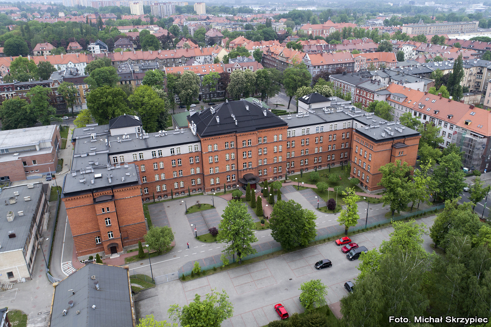

Sądy Okręgowe są jednym z najważniejszych elementów polskiego systemu sądownictwa. Są to instytucje, które pełnią kluczową rolę w rozstrzyganiu spraw karnych, cywilnych oraz administracyjnych na poziomie okręgu sądowego. Każdy Sąd Okręgowy obejmuje swoim zasięgiem konkretne terytorium, na którym jest odpowiedzialny za prowadzenie postępowań sądowych.
Zakres Kompetencji Sądów Okręgowych
Sprawy Karno-Sądowe: Sądy Okręgowe rozpatrują sprawy związane z przestępstwami i wykroczeniami popełnionymi na terenie danego okręgu sądowego. W ramach tych spraw podejmują decyzje dotyczące winy oskarżonych oraz wymierzają kary.
Sprawy Cywilne: Są to sprawy dotyczące m.in. rozwodów, podziału majątku, odszkodowań czy zobowiązań pieniężnych. Sądy Okręgowe rozstrzygają spory pomiędzy stronami, starając się osiągnąć sprawiedliwy i zgodny z prawem wynik.
Sprawy Administracyjne: Sądy Okręgowe zajmują się również sprawami administracyjnymi, np. w zakresie kontroli decyzji organów administracji publicznej. W przypadku konfliktu między obywatelem a organem administracyjnym, Sąd Okręgowy może być ostateczną instancją rozstrzygającą.
Struktura Sądu Okręgowego
Prezes Sądu Okręgowego: Na czele każdego Sądu Okręgowego stoi Prezes, który kieruje pracami sądu i odpowiada za jego sprawne funkcjonowanie.
Sędziowie: Są to osoby mające wykształcenie prawnicze oraz doświadczenie zawodowe, które zajmują się rozpoznawaniem spraw i wydawaniem wyroków.
Aparat Administracyjny: Oprócz sędziów, w Sądzie Okręgowym pracuje także personel administracyjny, który wspomaga funkcjonowanie sądu.
Historia
Budynek przy ulicy Kościuszki 15, w którym obecnie mieści się siedziba Sądu Okręgowego w Gliwicach, został wybudowany pod koniec lat 80, XIX wieku. Formie architektonicznej budynku nadano pałacowo-militarny charakter w stylu neorenesansowym. Jest to duży, murowany gmach z cegły, częściowo otynkowany, obejmujący cztery kondygnacje użytkowe oraz piwnice, a w części centralnej nieużytkowe poddasze. Surową monumentalną bryłę oparto na rzucie litery U, z krótszymi skrzydłami bocznymi.

Budynek pierwotnie przeznaczony był na koszary stacjonujących w Gliwicach wojsk niemieckich. Po wojnie w budynku tym mieściła się szkoła górnicza, a od lat 80, XX wieku stał się własnością Wojska Polskiego.
W ramach rozpoczętego wówczas remontu i rozbudowy budynku wzniesiono w elewacji północno-zachodniej dwie nowe klatki schodowe z szybami windowymi oraz powiększono poddasze o nadbudowy w bocznych częściach budynku głównego i w bocznych skrzydłach. Rezygnacja z przeznaczenia gmachu na potrzeby szpitala wojskowego spowodowała zaniechanie prac remontowych. Po podjęciu w 1999 roku decyzji o utworzeniu w Gliwicach Sądu Okręgowego, budynek w 2000 roku został zmodernizowany i przystosowany do funkcji sądowych. 4 stycznia 2001 roku uroczyście oddano do użytkowania nową siedzibę Sądu Okręgowego w Gliwicach.